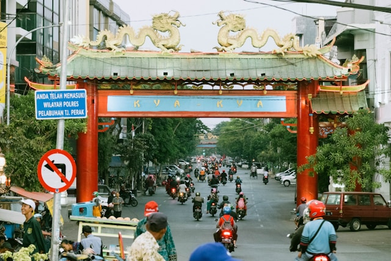
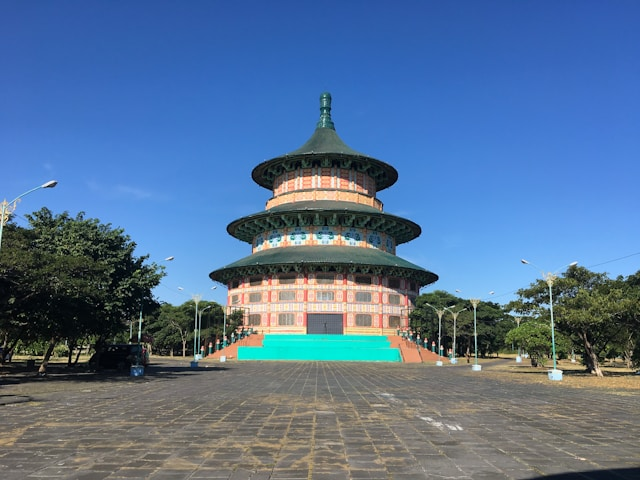
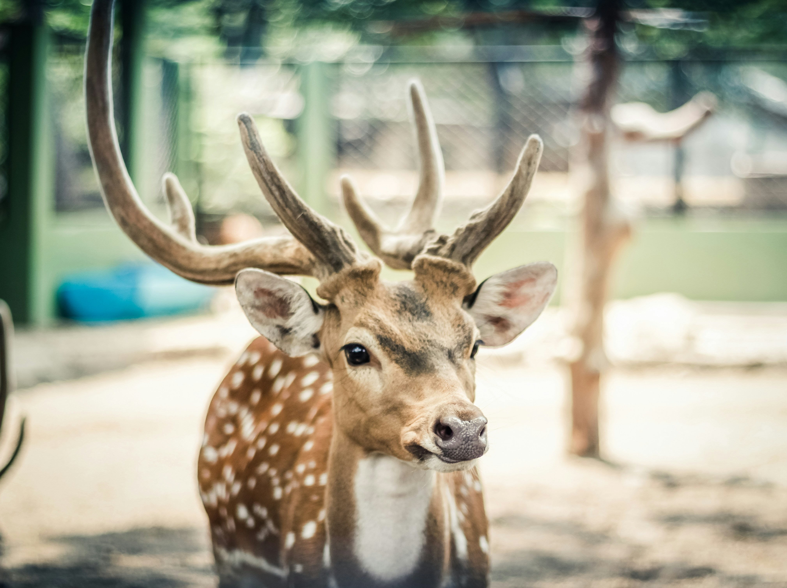

Sejarah
Kisah di Balik Kota Pahlawan
Surabaya terkenal sebagai "Kota Pahlawan" karena peran pentingnya dalam pertempuran 10 November 1945, sebuah peristiwa heroik di mana rakyat Surabaya berjuang keras mempertahankan kemerdekaan Indonesia dari pasukan sekutu. Peristiwa tersebut kini diperingati sebagai Hari Pahlawan Nasional.
Nama Surabaya sendiri konon berasal dari mitos pertarungan antara ikan hiu (Suro) dan buaya (Boyo), yang menjadi lambang keberanian pemuda-pemuda Surabaya. Sejarah panjang ini membentuk karakter kota yang tangguh dan dinamis, berkembang dari pelabuhan tua menjadi pusat perdagangan modern di kawasan timur Indonesia.
Hingga kini, jejak masa lalu masih dapat ditelusuri melalui bangunan-bangunan kolonial di kawasan Kota Tua, museum-museum bersejarah, serta monumen-monumen perjuangan yang tersebar di berbagai penjuru kota.
Wisata
Tempat Wisata Populer

Tunjungan
Jalan Tunjungan merupakan salah satu destinasi wisata ikonik di Kota Surabaya yang memadukan nilai sejarah, budaya, dan suasana kota modern.
Lihat Detail
Chinatown
Chinatown Surabaya atau kawasan Kembang Jepun (Kya-Kya) merupakan destinasi wisata budaya yang mencerminkan sejarah panjang komunitas Tionghoa di Surabaya.
Lihat Detail
Kenjeran Park
Kawasan wisata tepi laut dengan jembatan merah ikonik, kelenteng, dan panorama sunset yang memukau di ujung timur kota.
Lihat Detail
Kebun Binatang Surabaya
Salah satu kebun binatang tertua dan terlengkap di Asia Tenggara, rumah bagi ratusan spesies flora dan fauna langka.
Lihat DetailKuliner
Cita Rasa Khas Surabaya

Rujak Cingur
Makanan tradisional khas Surabaya yang unik, terdiri dari irisan mulut sapi (cingur), sayuran, buah-buahan, tahu, dan tempe, disiram bumbu petis udang yang khas.
Tradisional
Semanggi Suroboyo
Sajian daun semanggi rebus yang disiram saus kacang manis pedas, disajikan bersama kerupuk puli renyah oleh penjual keliling khas kota lama.
Legendaris
Lontong Balap
Perpaduan lontong, tauge, tahu goreng, dan lentho, disiram kuah kaldu gurih serta taburan bawang goreng dan sambal petis.
SarapanBudaya
Warisan Budaya Kota Pahlawan
Tari Remo
Tarian penyambutan khas Surabaya yang menggambarkan semangat kepahlawanan melalui gerakan kaki yang tegas dan dinamis.
Pakaian Adat
Busana khas Jawa Timuran dipadukan dengan gaya Cak dan Ning, ikon pasangan muda-mudi Surabaya yang mencerminkan kesantunan lokal.
Bahasa Suroboyoan
Dialek Jawa yang khas dengan intonasi tegas dan kosakata unik, menjadi identitas komunikasi sehari-hari warga kota.
Festival Rujak Uleg
Perayaan tahunan memperingati hari jadi kota, diramaikan lomba mengulek rujak raksasa di sepanjang Jalan Kembang Jepun.